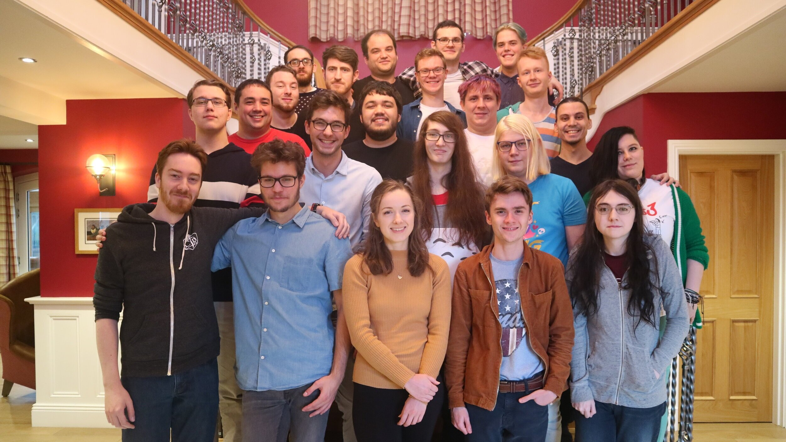

Back to Top
Minecraft: a system
Minecraft takes inputs as data, returns outputs as information so that its direct users gain
knowledge and the system’s purpose is fulfilled. Key aspects of Minecraft’s design can be analysed when
interpreted under a lens as an information system such as how everything links together in a diagram, the
information technology requirements when run and the fields of expertise that are involved within the system’s
creation.
Information systems diagram
Fields of expertise involved in the system’s creation
Minecraft could be considered a multimedia product because of its identity clearly being a virtual world, which
is epitomic of multimedia systems. It contains abundant text, images, animation, audio, video and hyperlinks.
Thus, Minecraft’s participants can be largely categorised by the types of roles that form a multimedia system.
Minecraft’s credits webpage, amalgamated with various
additional sources, sheds light on the roles and responsibilities of people who work to help design and create
Minecraft which are as follows:
Project managers and system designers
-
Project managers and leads
The structure is mostly organised as teams of people with similar skill sets, with directors and leads of
smaller teams inside. Examples will be given for each team.

-
System designers / creative leads & game designers
The very 3rd person on Minecraft’s list of credits below the overall Head of Studios is the Chief Creative
Officer. Brand Creative is a team that controls Minecraft’s creative direction and ensures that the overall
lore is consistent and woven through every other team. In this way, they consider the purpose of the system
and ensure that the game’s storyline aligns with it. For example, if the game developers thought that guns
were a good addition, the creative leads would determine that it would not fit well with Minecraft’s target
demographic and would harm the tranquillity fundamental to Minecraft’s design. The system designers would
rebuke their idea as they reflect throughout the development process that the purpose is being met. Related
are game designers that fulfil the creative direction that Minecraft will travel towards with engaging and
meaningful gameplay mechanics and elements that are cohesive with the existing game.
Content providers
What separates content providers from other groups of roles is that they
- Do not include system employees but are instead paid by royalties or bid on specific projects.
- Often use pre-existing content as it is cheaper for the company developing the system.
-
Translators
Minecraft is translated by 35 115 volunteers on Crowdin
into over 100 different languages. This content is not pre-existing, however, since there is no contractual
agreement that each contributor is Minecraft’s employee, it is an example of content being provided to
Minecraft’s system. While there are no monetary incentives, there is lots of progress because of the
community’s goodwill and incentives such as cosmetic capes that were provided to 29 Icelandic
translators[1].
-
Sound effects
Many of Minecraft’s sound effects come from Freesound[2]. Some
of them are provided below for you to sample.
-
Minecraft Marketplace
Minecraft has a marketplace where you can pay for community-made content such as worlds, skins, and texture
packs. Contractors creating content for Minecraft Marketplace must be a regionally registered business in
many parts of the world because of laws such as GST. Both an empirical test of Australia’s
region and Noxcrew,
who are the Marketplace’s 2nd largest partner confirm this. The executive producer of Minecraft Realms said
“The easiest thing to say is: over half is getting paid to the creators. The contracts that we have written
with them are more precise than that obviously, but that’s what we’re sharing.”[3]. They pay
royalties as a percentage of total revenue made from sales.

Media creators and editors
-
Artists
Mojang employs many types of artists:
- Art directors who are project managers
- Generalist artists
- Animators
- 3D artists
- Motion graphics designers
A combination of project managers, generalists and specialists work together to create all the art required
for Minecraft such as the splash screen and textures of entities, blocks and inventory items.
-
Audio engineers
Includes Lead Sound Designer, musicians and sound effect artists. Minecraft created original music and some
original sound effects instead of outsourcing all of it. Some music is provided below for you to sample.
-
Writers
Minecraft.net needs many writers for their blog articles and support pages.
Designers and layout specialists
-
Inventory & menu
Minecraft has many user interface elements that need to be laid out by professionals. For example, iPads
include touch controls that are intuitive to use and configurable, allowing the space button to be swapped
with the sneak depending on what the player prefers.
-
Website
Minecraft.net’s web design is managed by Ten Gun Design, Inc.
Technical employees
-
Programmers
They implement the vision that the game designers and creative direction team have. They are required to
clarify with the designers exactly what needs to be done as well as prototype solutions to determine their
feasibility. Programmers need to write code juggling many criteria such as the speed of writing it, its
performance, its accuracy and its maintainability throughout the future. Not only do they program both
Bedrock and Java Editions, but they program the launcher as well as Minecraft.net.

Other
There are some roles almost all retail businesses need, irrespective of industry. Minecraft employs a team of
testers that have offices around the globe. Additionally, it has an extensive operations team involving Front of
House receptionists, Human Resources and IT. Creative communication teams drive engagement through Social Media
Managers. Even niche areas such as the legal, business, and financing teams that are useful to have but easy to
overlook are employed by Mojang for Minecraft’s creation. Minecraft uses data analysts to inform others about
pricing decisions and the user experience specialists how players play Minecraft. Minecraft also needs people to
monitor customer support.